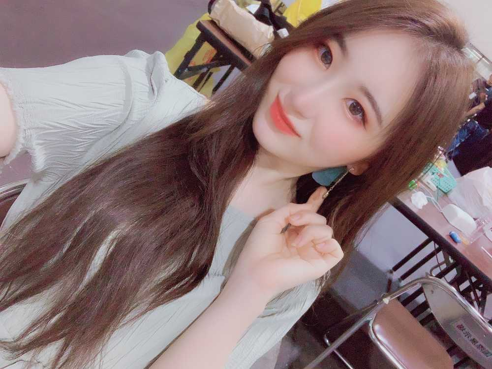
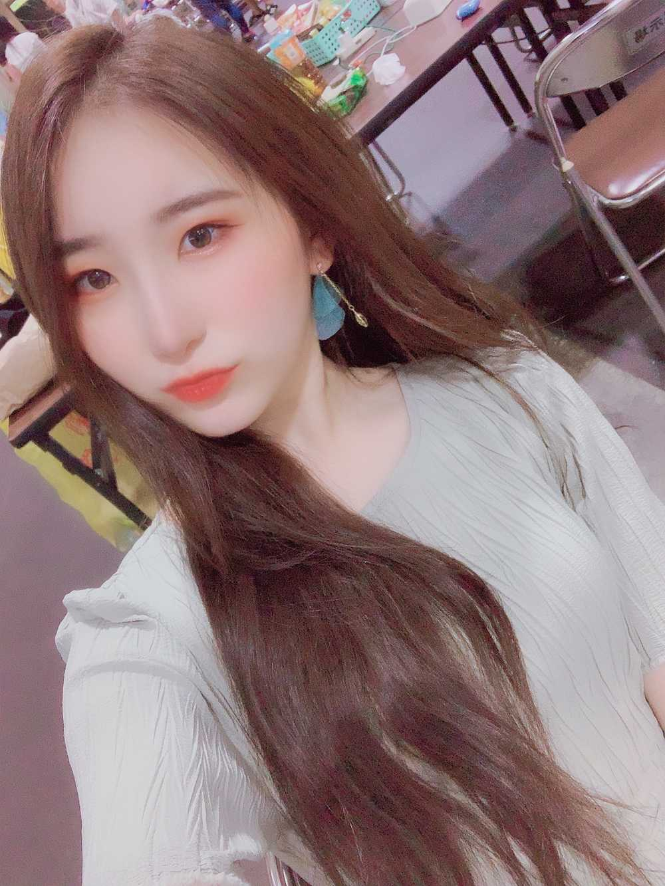

지금 이호은 뭘 하고 있을까나ㅎㅎ
토요일인데
하이터치를 기다리고 있거나
집에서 쉬고 있거나
아이즈원 동영상 보고 있거나
밖에서 친구를 만난 다거나 ㅎㅎ
今이호は何をしているかな
土曜日なのに
はイタチを待っているか
家で休んでいるかな
IZ*ONEの動画を見ているか
そとでともだちにあうか
전 점심겸 저녁으로
3시쯤에
장어 덮밥을 먹었습니다.
따뜻한 장어 덮밥은 오랜만이라 맛있었어요 ㅎㅎ
昼ごはん？夕食？で
3時ぐらい
ひつまぶし食べました。
温かいひつまぶしはひさしぶりだから
おいしかったです。

きょう
かわいい発音の日本語を
教えてもらいました。
이호に会いたくて